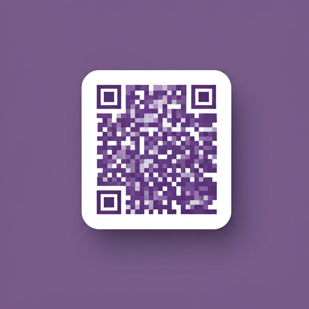

New Entry
Year 7
7

Scan to join the Year 7 Parents WhatsApp Community.
Stay informed and engaged with what's happening specifically for your child's year. These parent-led WhatsApp groups are the primary communication channels for coordinating class activities, discussing school events, and building a supportive community within your year group.

Scan to join the Year 7 Parents WhatsApp Community.
Scan to join the Year 8 Parents WhatsApp Community.
Scan to join the Year 9 Parents WhatsApp Community.
Scan to join the Year 10 Parents WhatsApp Community.
Scan to join the Year 11 Parents WhatsApp Community.